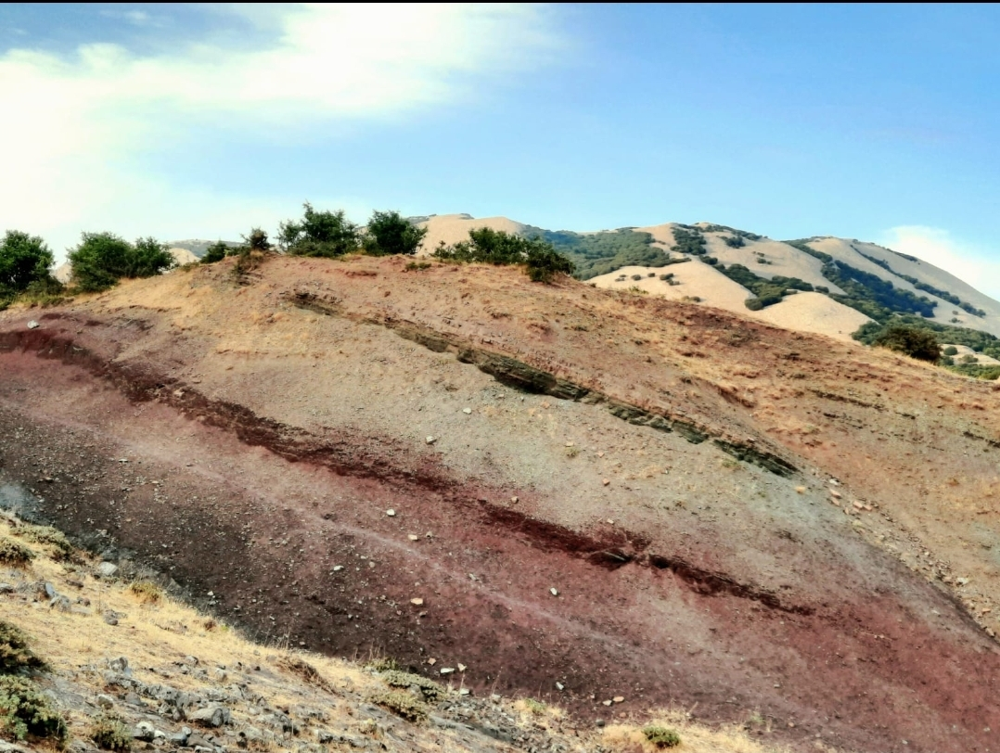

Affioramento di argilliti silicizzate della Formazione Crisanti

ITALIANO - Radiolariti color rosso vinaccia (Membro marnoso spongolitico) alternate a diaspri e argilliti silicizzate variegate. Bellissima esposizione caratterizzata dalla peculiare morfologia. (Cretaceo inf.)
ENGLISH - Red radiolarites (spongolitic marly Member) alternated with juspers and variegated silicized mudstones. Beautiful aspect characterized by the peculiar morphology. (Cretaceo inf.)